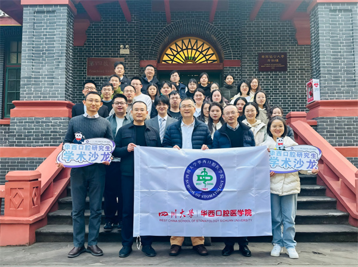

学院通知 · 科研创新
“精准融合·创新突破”口外系研究生学术沙龙圆满举行
发布时间：2026/01/19
2026年1月8日，我院研究生部联合口腔颌面外科学系成功举办研究生学术沙龙专场活动。口腔颌面外科学系副主任李精韬副教授担任沙龙主持，特邀包崇云教授、敬伟教授、李运峰副教授、胡洪英讲师担任点评嘉宾。 2023级博士研究生马中凯（导师李春洁教授）以“临床赋能、竞赛破局”为题，分享了口腔颌面外科手术机器人的应用与创新探索，展示了医工融合在口腔颌面外科临床实践中的新突破。2025级博士研究生隋昊（导师石冰教授）聚焦正电纳米材料治疗颌面肌纤维化的机制研究，为纤维化疾病的精准干预提供了新思路。2023级硕士研究生蒋丰林（导师陈宇教授）汇报了1例磷酸盐尿性间叶肿瘤诱发的骨软化症，梳理了该罕见骨代谢疾病的诊疗路径。 李精韬副主任在主持中表示，沙龙形式为口外研究生提供了“临床-科研-竞赛”综合性展示平台；点评嘉宾们对汇报内容给予高度评价，就临床转化、机制深挖及多学科融合等方面提出了建设性意见，现场学术氛围热烈。 本次活动为我院研究生搭建了高质量的学术交流平台，进一步拓展了学术视野，积极推动学子们的学术热情与科创活力。
